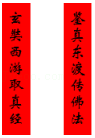
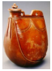
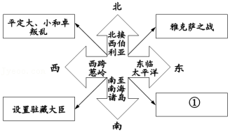
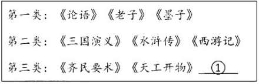

2019年北京市中考历史试题 · 选择题 第6、7、8、9、10题
6．（1.5分）一位同学在学习唐朝历史后，拟定了一副对联（见图），横批应为（ ）

A．海路通达B．经济繁荣C．民族和睦D．文明互鉴
7．（1.5分）北宋时期，最高军事机构枢密院的正副长官累计超过200人，其中文臣出身者162人，武将出身者39人。这说明北宋（ ）
A．与辽保持长期的和平B．军队战斗力得到提高
C．解除统兵将领的兵权D．实行重文轻武的政策
8．（1.5分）如图是北京通州辽代墓葬出土的酱釉马镫壶。该壶用北宋定窑技术烧制，造型仿照皮水囊，扁身双孔，便于穿绳携带。这件文物可用于研究（ ）

A．辽代农业生产技术的发展
B．契丹族与汉族的文化交融
C．宋代都市生活的丰富多彩
D．蒙古的崛起与元朝的统一
9．（1.5分）时空观念是了解和理解历史的基础。如图示意图中①处可填（ ）

A．设置台湾府B．签订《尼布楚条约》
C．平定噶尔丹叛乱D．实行金瓶掣签制
10．（1.5分）一位同学分类梳理中国古代书籍，其中①处应填（ ）

A．《韩非子》B．《兰亭集序》C．《窦娥冤》D．《农政全书》